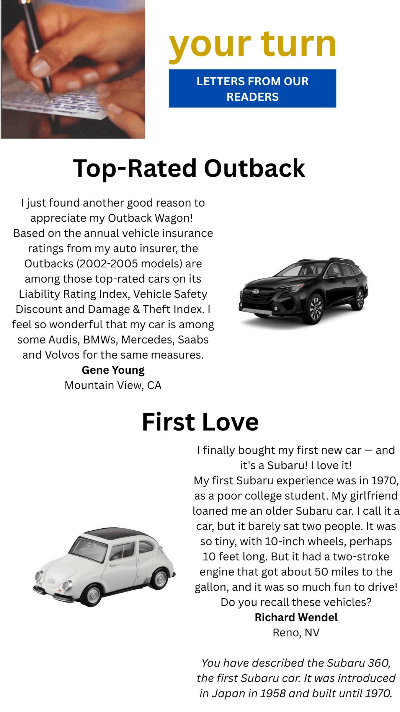
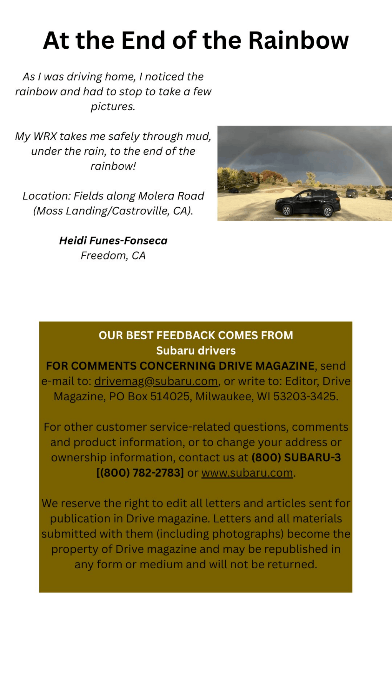

Quick Navigation & Design Source
1. Project Overview & Audience
Goal: To adapt the structured print magazine layout from Phase 1 into a fully responsive, custom-themed web review and gameplay breakdown for Graveyard Keeper 2 using semantic HTML5, CSS Grid, Flexbox, and media queries.
Target Audience: Simulation and indie gaming enthusiasts, fans of dark comedy management RPGs, and readers seeking detailed gameplay mechanics and reviews.
2. Resources & Credits
- Images Used:
media/TitleScreen.png — Header title graphic / game logomedia/Graveyard.png — Graveyard mechanics screenshotmedia/MapImages.png — World map and story preview imagemedia/Zombie.png — Zombie workforce / gameplay feature screenshot
- Written Content: Original game review text, expert review extracts from Thumb Culture, The Outerhaven, Metro.co.uk, and Cinelinx (via MobyGames).
- Typography / Fonts: Garamond, Georgia, and Arial (system fallback stacks).
- Tutorials & Technical Documentation:
3. Implementation Notes & Challenges
Challenging Parts:
- Responsive Ordering: Reconfiguring the layout flow for narrow mobile screens so that the main two-column content stacks cleanly and the review summary box (`.brown-contact-box`) drops to the absolute bottom using Flexbox `order` properties.
- Visual Layering Effect: Implementing a true foreground overlay badge (`.gameplay-badge`) positioned over the zombie gameplay image using `position: absolute` within a `position: relative` wrapper.
Ways Went 'Above and Beyond':
- Integrated full 5-state custom link styling (`:link`, `:visited`, `:focus`, `:hover`, `:active`) and optimized screenshot assets for rapid screen rendering.
4. Responsive Mobile Plan & Sketches
The mobile layout was planned out using Canva mockups to demonstrate how the multi-column desktop design adapts and collapses into a single-column flow on narrow screens.

